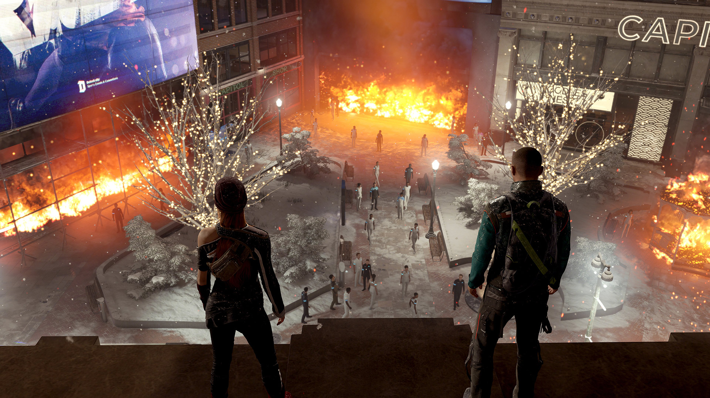
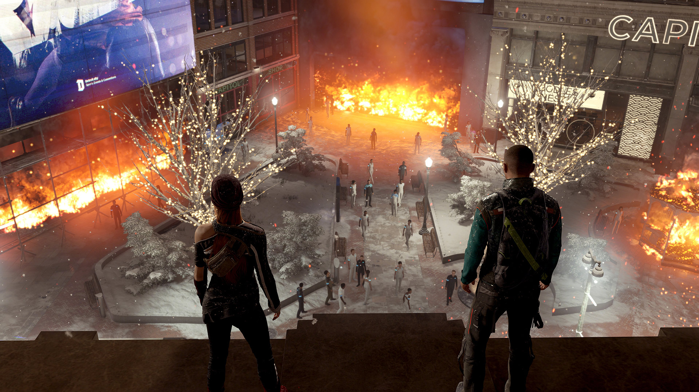

Date de sortie : 29 octobre 1999
Genre : Action-Aventure
"The Nomad Soul" plonge les joueurs dans une aventure captivante où ils incarnent Kay'l, un policier confronté à des événements mystérieux. Alors que des éléments surnaturels bouleversent sa réalité, les joueurs explorent un monde parallèle plein de mystères. Le transfert d'esprit et les choix du joueur influencent le déroulement de l'histoire. Avec une fusion d'action-aventure et des éléments de science-fiction, "The Nomad Soul" offre une expérience immersive où la frontière entre réalité et fantastique s'estompe.


 
